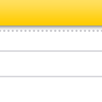

基本资料
- 出生年月：1989 年 5 月
- 专业：计算机技术
- 学位：硕士
- 英语：专业 4 级
- 婚姻状况：单身

联系方式
- 手机：18953553088
- 邮箱：haohu@techaction.cn
- QQ：415492354
项目经历
高级开发工程师
1999-2005
百度技术有限公司
中华民族到了最危险的时候，每个人都迫着发出最后的吼声。起来起来起来，我们万众一心，冒着敌人的炮火，前进前进前进进。
自身开发工程师
2005-2010
腾讯有限公司
中华民族到了最危险的时候，每个人都迫着发出最后的吼声。起来起来起来，我们万众一心，冒着敌人的炮火，前进前进前进进。
教育经历
学委
1999-2005
清华大学
中华民族到了最危险的时候，每个人都迫着发出最后的吼声。起来起来起来，我们万众一心，冒着敌人的炮火，前进前进前进进。
班长
2005-2010
北京大学
中华民族到了最危险的时候，每个人都迫着发出最后的吼声。起来起来起来，我们万众一心，冒着敌人的炮火，前进前进前进进。

获奖经历
- 2010 年 优秀学生会干部
- 2011 年 国家科技进步奖
- 2010 年 优秀学生会干部
- 2011 年 国家科技进步奖
- 2010 年 优秀学生会干部
- 2011 年 国家科技进步奖
- 2010 年 优秀学生会干部
- 2011 年 国家科技进步奖